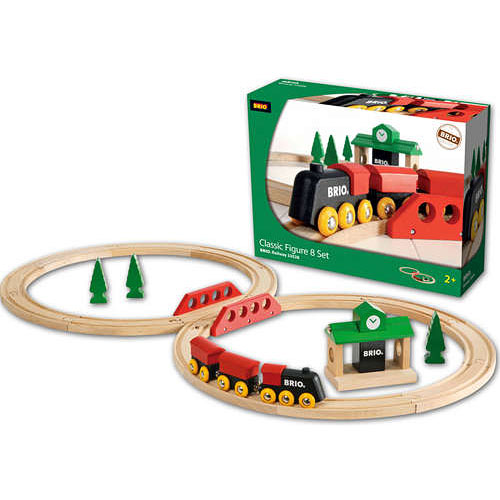
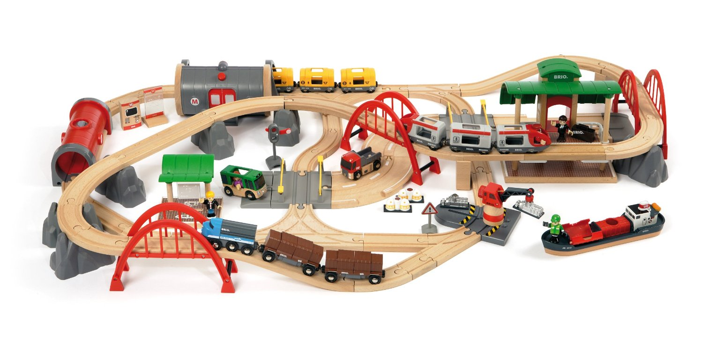
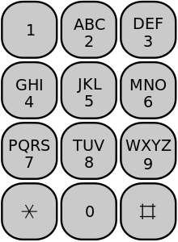

Chapter 1 Preliminaries in R (Week 1)
1.1 R and R Studio
1.1.1 What is R?
- A statistical programming language
- Open-source
- A core package with many available user-created add-ons (packages)
R is currently popular in a number of fields, including:
- Statistics
- Machine learning
- Data journalism / Data analysis
“The best thing about R is that it was developed by statisticians. The worst thing about R is that… it was developed by statisticians.”
-Bo Cowgill, Google, at the Bay Area R Users Group
1.1.2 Gratis vs. libre
- Gratis: Free as in beer
- Libre: Free as in speech
With open-source software (free as in speech), you can:
- Check out the code to figure out how the software works
- Share the code (and software) with other people
- Make any changes you want to the code
1.1.3 What is RStudio?
RStudio is a user interface for R. You download it separately, but it’s a “nicer” way to work in R.
RStudio (the company) currently:
- Develops and freely provides the RStudio IDE
- Provides excellent resources for learning and using R (cheatsheets, )
- Is producing some of the most-used R packages
- Employees some of the top people in R development
1.1.4 Setting up
If do not already have them, you will need to download and install both R and RStudio.
- Go to CRAN and download the latest version of R for your system. Install.
- Go to the RStudio download page and download the latest version of RStudio for your system. Install.
- Defaults should be fine for everything.
1.2 The “package” system
1.2.1 R packages
Your original download of R is only a starting point:

To take full advantage of R, you’ll want to add on packages:

You can get packages to add-on to your version of R from:
- CRAN (currently 7050 available packages)
- GitHub
- Your friends and collaborators
- Make them yourself
1.2.2 Installing from CRAN
The most popular place from which to get packages is currently CRAN. You can install packages from CRAN using R code.

For example, to get the package phonenumber, you could use:
install.packages("phonenumber")1.2.3 Loading an installed package
Once you have a package, you can load it to an R session using the library() function.
library(phonenumber)Once it’s loaded, you can use all its functions.
fedex_number <- "GoFedEx"
letterToNumber(fedex_number)## [1] "4633339"1.3 Some basics of R code
1.3.1 R’s MVP: <-
<- is R’s assignment operator. It takes whatever you’ve created on the right hand side of the <- and saves it as an object with the name you put on the left hand side of the <- :
## Note: Generic code-- this will not work
[name of object] <- [thing I want to save]For example, if I just type "GoFedEx", R will print it back to me, but won’t save it anywhere for me to use later:
"GoFedEx"## [1] "GoFedEx"However, if I assign it to an object, I can print it out or use it later by referencing that object name:
fedex_number <- "GoFedEx"
fedex_number## [1] "GoFedEx"letterToNumber(fedex_number)## [1] "4633339"1.3.2 <- vs. =
You can make assignments using either <- or =, and you’ll see both when you’re reading other people’s code.
However, R gurus advise using <- in your own code, and as you move to doing more complex things, problems might crop up if you use =.
For now, though, it will be helpful for you to know that these two calls do the same thing:
one_to_ten <- 1:10
one_to_ten## [1] 1 2 3 4 5 6 7 8 9 10one_to_ten = 1:10
one_to_ten## [1] 1 2 3 4 5 6 7 8 9 101.3.3 Naming objects
“There are only two hard things in Computer Science: cache invalidation and naming things.”
— Phil Karlton
- Use only letters, numbers, and underscores
- Don’t start with anything but a letter
From Hadley Wickham’s R style guide
- Use lower case for variable names (
fedex_number, notFedExNumber) - Use an underscore as a separator (
fedex_number, notfedex.numberorfedexNumber) - Avoid using names that are already defined in R (e.g., don’t name an object
mean, because asmeanfunction exists)
1.4 R’s most basic object types
The two most basic types of objects for data in R are vectors (1D) and dataframes (2D).
1.4.1 Vectors
- A vector is a string of values.
- All values must be of the same class (i.e., all numbers, all characters, all dates)
- You can use
c()to join values together to create a vector - The length of the vector is how many values it has in it
For example:
fibonacci <- c(1, 1, 2, 3, 5)
fibonacci## [1] 1 1 2 3 5length(fibonacci)## [1] 5An example using characters instead of numbers:
one_to_five <- c("one", "two", "three", "four", "five")
one_to_five## [1] "one" "two" "three" "four" "five"If you mix classes, it will default to most generic:
mixed_classes <- c(1, 3, "five")
mixed_classes## [1] "1" "3" "five"You can pull out certain values by using indexing ([...]) to identify the locations you want to get
fibonacci[2] # Get the second value## [1] 1fibonacci[c(1, 5)] # Get first and fifth values## [1] 1 5fibonacci[1:3] # Get the first three values## [1] 1 1 21.4.2 Dataframes
A dataframe is one or more vectors of the same length stuck together side-by-side. It is the closest R has to what you’d get with an Excel spreadsheet.
You can create dataframes using the data.frame() function. However, most often you will create a dataframe by reading in data from a file using something like read.csv().
For example, to create a dataframe from vectors you already have saved as R objects:
fibonacci_seq <- data.frame(num_in_seq = one_to_five,
fibonacci_num = fibonacci)
fibonacci_seq## num_in_seq fibonacci_num
## 1 one 1
## 2 two 1
## 3 three 2
## 4 four 3
## 5 five 5The format for using data.frame() is:
## Note: Generic code-- this will not work
[name of object] <- data.frame([1st column name] = [1st column content],
[2nd column name] = [2nd column content])You can use indexing ([..., ...]) for dataframes, too, but now they’ll have two dimensions (rows, then columns). Put the rows you want before the comma, the columns after. If you want all of something, leave the designated spot blank. For example:
fibonacci_seq[1:2, 2] # First two rows, second column## [1] 1 1fibonacci_seq[5, ] # Last row, all columns## num_in_seq fibonacci_num
## 5 five 5Usually, instead of creating a dataframe from vectors, you’ll read one in from data on an outside file. For example, to read in a dataset from a CSV file called daily_show_guests.csv in a subdirectory called data/:
daily_show <- read.csv("data/daily_show_guests.csv",
header = TRUE,
skip = 4)
daily_show[1:2, ]## YEAR GoogleKnowlege_Occupation Show Group Raw_Guest_List
## 1 1999 actor 1/11/99 Acting Michael J. Fox
## 2 1999 Comedian 1/12/99 Comedy Sandra BernhardYou can use the functions dim(), nrow(), and ncol to figure out the dimensions (number of rows and columns) of a dataframe:
dim(daily_show)## [1] 2693 5nrow(daily_show)## [1] 2693ncol(daily_show)## [1] 51.5 Functions
In general, functions in R take the following structure:
function.name(required information, options) ## Generic codeThe result of the function will be output to your R session, unless you choose to save the output in an object:
new.object <- function.name(required information, options) ## Generic codeExamples of this structure:
head(daily_show)## YEAR GoogleKnowlege_Occupation Show Group Raw_Guest_List
## 1 1999 actor 1/11/99 Acting Michael J. Fox
## 2 1999 Comedian 1/12/99 Comedy Sandra Bernhard
## 3 1999 television actress 1/13/99 Acting Tracey Ullman
## 4 1999 film actress 1/14/99 Acting Gillian Anderson
## 5 1999 actor 1/18/99 Acting David Alan Grier
## 6 1999 actor 1/19/99 Acting William Baldwinhead(daily_show, n = 3)## YEAR GoogleKnowlege_Occupation Show Group Raw_Guest_List
## 1 1999 actor 1/11/99 Acting Michael J. Fox
## 2 1999 Comedian 1/12/99 Comedy Sandra Bernhard
## 3 1999 television actress 1/13/99 Acting Tracey Ullmandaily_show <- read.csv("data/daily_show_guests.csv",
skip = 4,
header = TRUE)Find out more about a function by using ? (e.g., ,?head, ?read.csv). This will take you to the help page for the function, where you can find out all the possible arguments for the function, required and optional.